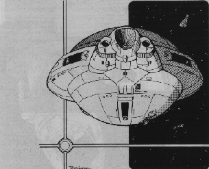

BARD PAPER: SARA5002
BARD PAPER: SARA5002
| Home
| Traveller
| BARD
| SARA
|
Voroshilef-Class Battleship
design by Antti
Lahtinen

In order to adequately reinforce the defenses of the Domain, every
possible starship is benign impressed to service. Squadron after squadron
of mothballed battleships is benign reactivated, refurbished, and pressed
into the line to hold back the raiding Vargr.
Long ago, a squadron of Voroshilef-class battleships was
retired from active service, transferred to reserve fleet, and
ultimately parted in orbit around Mora/Spinward Marches (2924 C367300-8)
until they could be scrapped. These ships were always second-class
battleship, never intended for use on the main battlefronts, but in the
Marches, when used against the Vargr, they promised to be reasonably
efficient.
MegaTraveller: Rebellion Sourcebook
Nail Mission, Project
12
The Voroshilef is an old Imperial design, removed from active
service long before Rebellion and Virus Wars. However a
number of mothballed Voroshilefs were re-activated during the
rebellion, and some of them may still be operating within Regency,
Vilds and Vampire Fleets.
Though the Voroshilef-class is outdated, they are still
considerable opponents for just about any target. Voroshilefs
massive armor can withstand hits from 500 MJ/cm2 lasers, 40
GJ/cm2 particle beams, and its meson screen is designed to
repel 22.5 GJ meson gun hits.
Voroshilef has quite large fuel tanks, allowing it to make 2
separate 3-parsec jumps and still have enough fuel for 29 G-hours
thrust, or maximum of 3 separate 3-parsec jumps with 10 G-hours thrust.
The ship is approximately as large as a city block[1], higher
than 17-story building[2], and its fuel tanks contain
enough liquid to fill over 400 olympic-sized swimming
pools[3].
The ship does not have Grav drives (not a slightest change, for
they would take too much surface area). However, assuming that HEPlaR
drives have thrust vectoring, this ship can take off and land on planets
where local gravity is less than 2G.
Voroshilef-Class Battleship
General Data
| Displacement: 200,000 tons |
Hull Armor: 1,000 |
| Length: 262.31 meters |
Volume: 2,800,000 m3 |
| Price: 84.26 GCr |
Target Size: VL |
| Configuration:Streamlined Dome/Disc |
Tech Level: 13 |
| Mass (Loaded/Unloaded): 2,413,546.7 / 2,268,590.3 |
Engineering Data
- Power Plant: 276.46 GW Fusion Power Plant, 1 year duration (27,646.3 m3 fuel)
- Jump Performance: 3 (560,000 m3 fuel)
- G-Rating: 2G HEPlaR (120.68 GW/G)
- G-Turns: 96 (J2: 108.4; J1: 120.7; 133.1 using all jump fuel), 15,085.0 m3 fuel each
- Maint: 48801
Electronics
- Computer: 3xTL-13 Fibre-optic computer (0.9 MW)
- Commo: 4xMaser (Unlimited; 0.6 MW), 4xRadio (10 hex; 10 MW)
- Avionics: Imaging EMS, IGS positioning, 170 km/h NOE
- Sensors: 2xAEMS (16 hex; 50 MW), PEMS (6 hex; 0.25 MW),
- ECM/ECCM: EMS Jammer (16 hex;100 MW), EM Masking (2.8 GW)
- Controls: Bridge with 515 bridge workstations, Fire Control
Bridge with 50 workstations, 2302 normal workstations
Armament
- Offensive:
40-GJ Meson Gun (Loc:Spinal; Arcs:1; 11111.1 MW (-2 Diff Mods); 216 crew)
2x10-GJ Meson Gun (Loc:Parallel; Arcs:1; 2777.78 MW (-2 Diff Mods); 36 crew)
2x10-GJ Particle Accelerator (Loc:Parallel; Arcs:1;2777.78 MW (-2 Diff Mods); 5 crew)
80x135-MJ Laser Turret (Loc:2-3;Arcs 1-3; Loc:10-11;Arcs;All; Loc:20;Arcs
4-5; 37.5 MW (-2 Diff Mods); No crew)
40xMissile Barbette (Loc:1,2,3,10,11,20;5 ready missiles each; 0.15 MW;
1 crew)
Total 200 ready missiles plus 400 in cargo.
- Defensive:
120xSand Turret (Loc:10-11; Arcs:All; 2d6x5 Reduc/Hit; 35 Cann; 1 MW; 1
crew)
20xNuclear Damper (Loc:10-11; Arcs:All; 1 hex; 180 MW; 1 Crew)
TL-13 Meson Screen Generator (PV=750; 1250 MW; 1 Crew)
- Master Fire Directors: 50xTL-13 (4 Diff Mods; 10 hex; Msl 10
hex; 3.25 MW; 1 crew)
| Short | Medium | Long | Extreme |
| 40-GJ Spinal Meson Gun | 6:1000 | 12:500 | 24:250 | 48:125 |
| 10-GJ Parallel Meson Gun | 4:500 | 8:250 | 16:125 | 32:63 |
| 10-GJ Parallel PAWS | 10:500 | 20:500 | 40:500 | 80:287 |
| 135-MJ Remote Laser Turret | 10:1/9-29 | 20:1/7-23 | 40:1/4-11 | 80:1/2-6 |
Accommodations
- Life Support: Extended (136.34 MW), Gravitic Compensators (3.41 GW)
- Grav Compensation: 4 G.
- Crew: 4083 (2xManeuver, 9xElectronics, 2282xEngineer, 508xGunnery, 491xMaintenance, 100xShip's Troops, 15xFlight, 89xSteward, 33xMedic, 554xCommand)
- Crew Accommodations: 554xSmall Stateroom (command crew; 0.5 kW),
1715xSmall Stateroom (double occupancy 0.5 kW), 25xLarge Stateroom
(ships troops in quadruple occupancy 1 kW)
- Passenger Accommodations: 10xSmall Stateroom (0.5 kW)
- Other Facilities: 114xElectronics Shop (0.6 MW), 34xSick Bay (0.8 MW)
- Cargo: 9800 m3 (700 tons), 28 Large Hatches, 400 missiles in magazine
- Small Craft and Launch Facilities: 5x95-ton minimal hangar
- Air Locks: 2000
Notes
Total Fuel Tankage: 2,035,806.3 m3 (145,414.7 tons).
Fuel scoops (3% of ship surface), fills tanks in 6.06 hours.
Fuel purification machinery (1.27GW), 48 hours to refine 2,035,806.3
m3.
Mass and price includes five 95-ton Shuttles.
Crew requirements are calculated by using "Modified FFS" crew model.
This design is based on the data found in Battle Raider and
Rebellion Sourcebook. However the ship has now only a fixed 6-hex
PEMS sensor instead of the fixed 8-hex sensor shown in BR datasheet. The
BR value is obviously an error, since a 200.000-ton hull can have up to
170 m diameter fixed antenna, and the diameter of a 8-hex antenna is 400
m.
[1] Average city block is 200 x 200 m square.
[2] Assuming that each story is 3 meters high.
[3] 25 x 50 meters, 4 meters deep.
Damage Tables
Area Surface Hits Internal Explosion
1 1-6: Screens 1-5: Weap, 6-20: Fuel
2-3 1: Ant, 1-6: Screen 1-3: Weap, 4-11: Elec, 12-20: Fuel
4-9 1-5: EMM RAD Fuel
10-11 1-7: AL 1-12: Qtrs, 13-17 Fuel, 18-20; Weap
12-15 1-5: EMM RAD Fuel
16-17 1: LP, 2-3: CH 1-2: Hold, 3-20: Eng
18-19 1-10: Screens Fuel
20 1-6: Screens 1-3: Weap, 4-13: Eng, 14-20 Fuel
Systems
AEMS-2x4h LS-8287H MG-721H
AG-137H LSR-25x1H MG-2x135H
AL-2000x1h MD-242H PA-2x57H
ELS-4144H MFD-50x1H LT-80x1H
EMM-280H MS-188H MT-40x1H
EMM Rad-2800h ND-20x1H ST-120x1H
FPP-1782H PEMS-1h
FT-20358H PEMS Ant-3h
HULL-3113H PP-2765H
JD-3360H SSR-2279x2h
®1996. Traveller is a registered trademark of FarFuture Enterprises.
All rights reserved.
BARD Logo Copyright ©1996 by Lawrence C. Cox.
This page constructed by Antti Lahtinen.